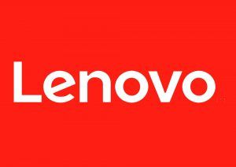
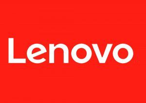
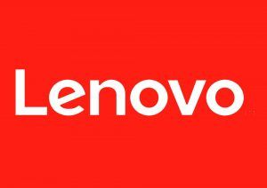

Axido est une société qui produit des services informatiques avec de l'infogérance a un prestataire extérieur (maintenance informatique, infogérance serveur et réseaux, l'externalisation informatique, services managés, virtualisation,). Elle propose aussi de l'hébergement sur des serveurs, Ils fournissent des moyens de communication ainsi que de l'aide à la transformation digitale.
La société possède des savoirs faire dans la gérance informatique et de la gestion réseau, elle accompagne vos équipes dans les différentes étapes de mise en place de votre solution réseau pour vous fournir un service de qualité performant, sécurisé, facilement monitorable et prêt à accueillir les nouveaux usages (Déploiement de réseau wifi performant, déploiement de liens internet performants pour disposer de la meilleure connexion (ADSL, SDSL, fibre optique),câblage informatique,) Leur volonté est de proposer la meilleure gestion de réseau possible.
Ils vendent aussi des services à la transition informatiques. L'entreprise aide ses clients à transitionner vers l'informatique ainsi que la maintenance des équipements lié pour que vous garantir toujours d'une modernisation, sécurité, et que vous soyez prêt à rencontrer les technologies de demain.

Ses clients sont d'autres entreprises PME qui souhaitent réaliser leur transformation et leurs usagers sont les entreprises voulant une maintenance de leurs services informatiques.

Axido, partenaire certifié Cloud chez Microsoft depuis de nombreuses années, accompagne leurs clients sur le choix et l’adoption des technologies Cloud afin d’accélérer leur développement, en leur offrant des produits Microsoft. Elle s'appuie aussi sur de nombreux autres partenaires reconnus comme Lenovo, HP, F-Secure,... Basant leurs solutions informatiques sur des technologies d’avenir. On compte environ 568 sociétés qui évoluent dans ce même secteur d'activité et qui sont en concurrence avec Axido/prox.
 

